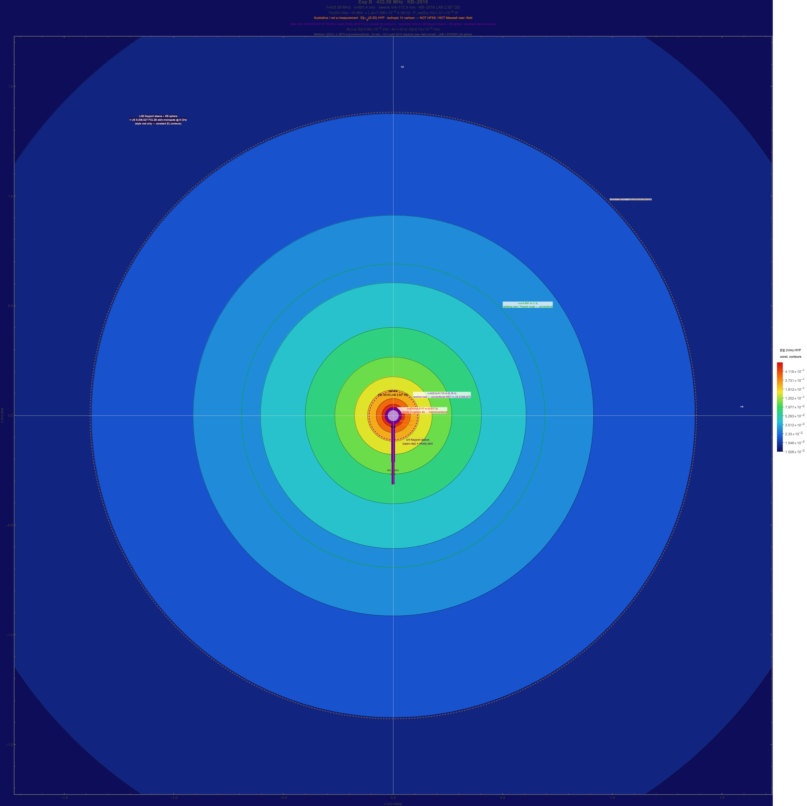
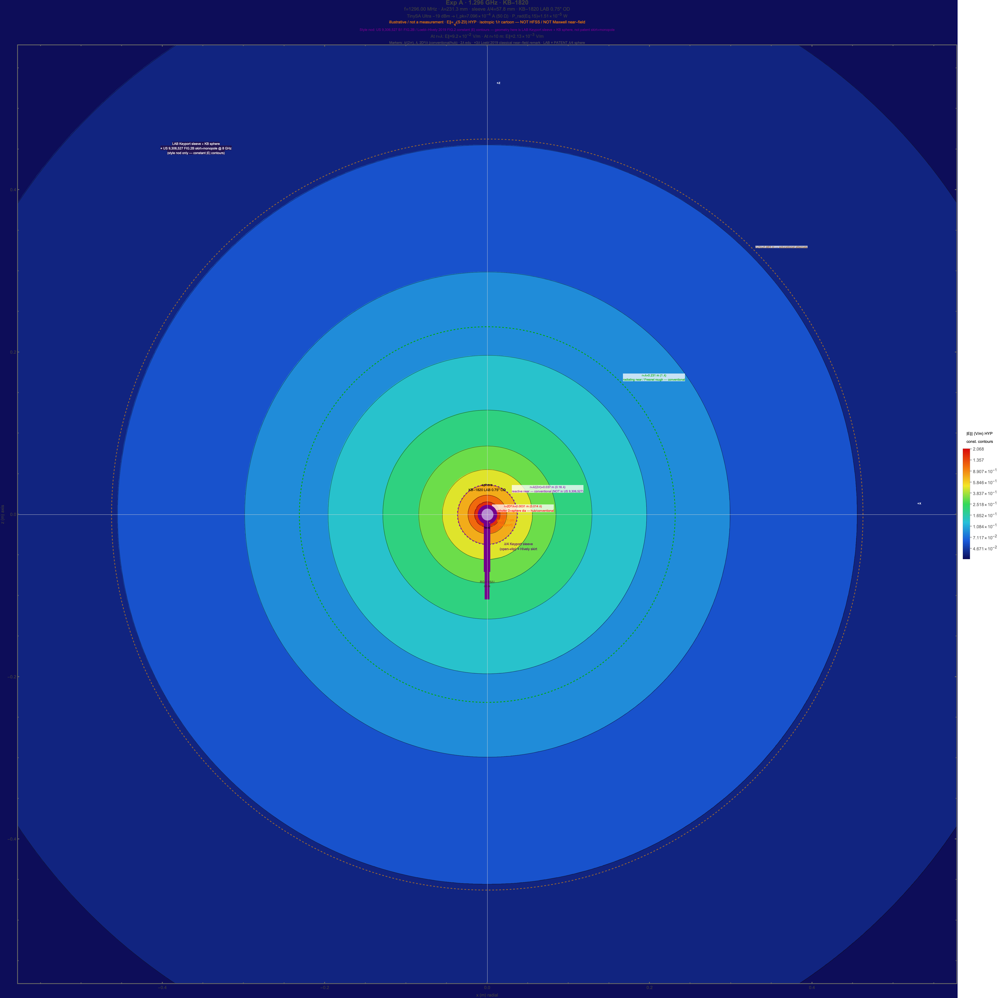
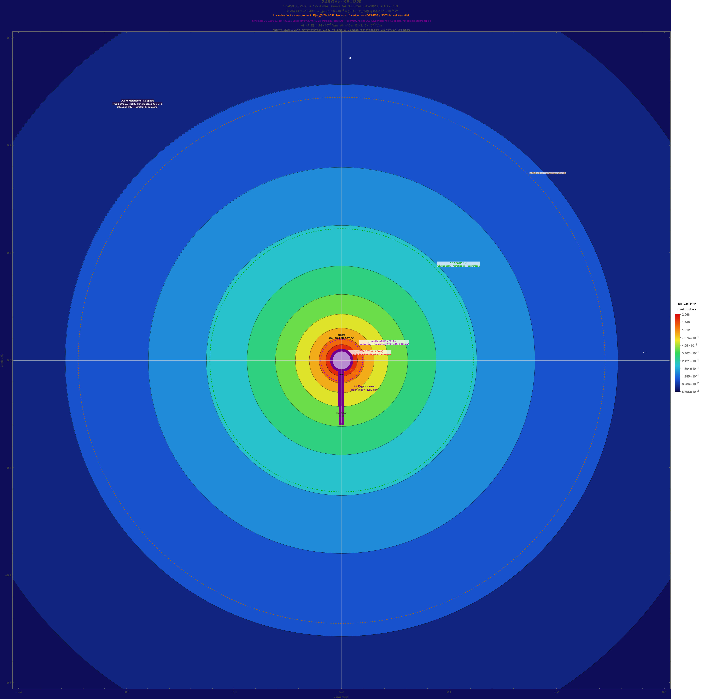
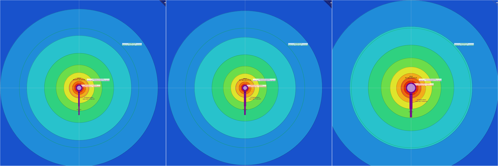

SLW Hub
SLW HubHYP / illustrative · efield-maps-v0.2-snr-dual-sim-params-v0.2
Sleeve + sphere TX — 2D E∥ color maps
CoS Mathematica exports (primary) plus an optional hub canvas using the same locked formulas. Assemblies: Navy Keyport-style λ/4 sleeve (US 12,525,711 — open toward tip) + LAB aluminum spheres KB-2016 2.50″ @ 433.59 MHz and KB-1820 ¾″ @ 1.296 / 2.45 GHz. Drive: TinySA Ultra −19 dBm. Physics: physics-constants.json · SNR sibling: sleeve-balun-snr.html · Cloud: SleeveBalunEFieldMaps.
E∥(10 m) = 2.127×10−3 V/m (all bands)
E∥(λ) = 3.077×10−2 / 9.197×10−2 / 1.739×10−1 V/m · 433.59 MHz / 1.296 GHz / 2.45 GHz
Source:
img/efield/efield_summary.json
· Cloud Manipulate
CoS Mathematica panels (primary)
Exported PNGs from Wolfram Cloud · SleeveBalunEFieldMaps. Legend: log V/m. Markers: λ/(2π), λ, 2D²/λ (D = sphere OD), plus educational 2λ / ~3λ.
{kind=link}

Sleeve λ/4 ≈ 172.9 mm · E∥(λ)≈3.077×10−2 V/m
{kind=link}

Sleeve λ/4 ≈ 57.8 mm · E∥(λ)≈9.197×10−2 V/m
{kind=link}

Sleeve λ/4 ≈ 30.6 mm · E∥(λ)≈1.739×10−1 V/m

Optional interactive canvas (same formulas — hover for local E∥)
Browser raster of the isotropic 1/r cartoon for parity with other hub sims. Prefer CoS PNGs above for publication-quality FIG. 2B-style shading.
Hover for local r and E∥. Metal masked. Window ±2.5 λ. Legend: log₁₀ E∥ (V/m).
Near / far markers
λ/(2π) · λ · 2λ · 2D²/λ
- λ/(2π) = —
- λ = —
- 2D²/λ = —
- 2λ = —
Radial model (lockstep with JSON / CoS WL)
P = 10^((P_tx_dBm − 30)/10) # W into 50 Ω; P_tx = −19 dBm (TinySA Ultra max) I_rms = √(P / 50); I_peak = I_rms √2 P_rad = I_peak² · Z0 / (4π) # US 9,306,527 Eq. 15 S(r) = P_rad / (4π r²) # isotropic geometric E∥(r) ≈ √(S(r) · Z0) # HYP / illustrative impedance cartoon # ⇒ E∥ ∝ 1/r outside conductors # Markers: λ/(2π), λ, 2D²/λ (D=LAB sphere dia), 2λ, ~3λ educational # Geometry: Keyport sleeve open→tip + LAB KB sphere — NOT patent skirt+monopole FIG.2B
Bands
| Band | f | Sphere | λ/4 sleeve | E∥(λ) lock | PNG |
|---|---|---|---|---|---|
| Exp B | 433.59 MHz | KB-2016 2.50″ | 172.9 mm | 3.077×10−2 V/m | PNG |
| Exp A | 1.296 GHz | KB-1820 ¾″ | 57.8 mm | 9.197×10−2 V/m | PNG |
| ISM | 2.45 GHz | KB-1820 ¾″ | 30.6 mm | 1.739×10−1 V/m | PNG |
Citations / hub links
- CoS Cloud: SleeveBalunEFieldMaps
- Assets: img/efield/ · efield_summary.json
- SNR sibling: sleeve-balun-snr.html
- Geometry: sleeve-balun.html · setup#sleeve · Navy US 12,525,711
- Style citation (≠ geometry): US 9,306,527 B1 FIG. 2B · Loebl–Hively 2019 FIG. 2
- Machine-readable: physics-constants.json →
efield_maps·efield-maps-v0.2-snr-dual-sim-params-v0.2(physicssnr-dual-sim-params-v0.2)
efield-maps-v0.2-snr-dual-sim-params-v0.2 · 25 Sep 2026 (labels unified; maps exported 24 Sep) · Dan Britton SLW Hub. Educational, contested, illustrative. Mathematica Cloud owned by CoS; this page is the GitHub Pages half with embedded PNG exports.